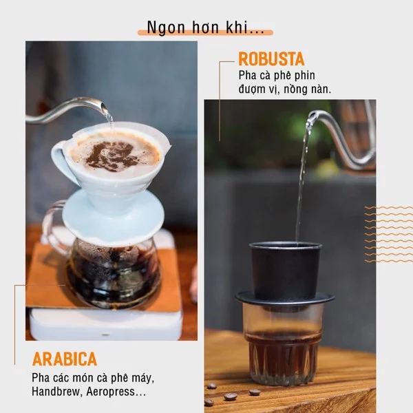

Tin tức | Coffeeholic
Cùng Arabica, Robusta cũng là loại cà phê nổi tiếng được sử dụng phổ biến ở Việt Nam và nhiều nước khác trên thế giới. Với nhiều đặc điểm riêng, không quá khó để có thể nhận ra hương vị của loại cà phê trứ danh này.
Đặc điểm cà phê Robusta
Về hình dạng, hạt cà phê Robusta có hình tròn, đường kính khoảng 10 – 13 mm. Hạt Robusta có màu nâu đậm và hàm lượng caffeine từ 3 - 4%, trong khi đó Arabica chỉ chiếm từ 1 - 2%.
Về điều kiện trồng, cà phê Robusta sinh trưởng tốt trong vùng có mưa nhiều và nhiều ánh nắng mặt trời. Nhiệt độ thích hợp ở mức 24 - 29 độ C, ưa sống ở những vùng có độ cao dưới 1000 mét, phổ biến ở 850 – 900 mét và ở những vùng có đất đỏ bazan màu mỡ.
Ở Việt Nam, Robusta còn được gọi với cái tên quen thuộc là cà phê Vối
Ở Việt Nam có rất nhiều vùng phù hợp để trồng giống Robusta, đặc biệt là Buôn Ma Thuột, Đắk Lắk, Lâm Đồng, Gia Lai, Đắk Nông,… Đây là những vùng đất mang đến hương vị cà phê Robusta nguyên chất ngon và nổi tiếng. Tuy nhiên, do sự khác biệt về thổ nhưỡng mà hương vị Robusta ở các vùng cũng có sự khác biệt tương đối. Những người sành cà phê, có gu thưởng thức tinh tế sẽ dễ dàng cảm nhận được sự khác biệt ấn tượng mà đầy thú vị này.
Hương vị cà phê Robusta nguyên chất
Cà phê Robusta nguyên chất được lòng nhiều người bởi vị đậm đà và mùi thơm đặc trưng. Nhìn chung, Robusta nguyên chất thường có vị chát và đắng hơn nhiều so với Arabica. Một trong những nguyên nhân dẫn đến tính chất này là do Robusta thường được áp dụng phương pháp chế biến khô.
Ngoài ra, hạt cà phê Robusta nguyên chất chứa nhiều hàm lượng Chlorogenic Acid (CGA). Tuy được gọi là Acid nhưng Chlorogenic Acid không đặc trưng bởi “vị chua” mà là “vị đắng”. Trong quá trình rang hạt cà phê, CGA sẽ phân hủy để tạo thành axit caffeic và axit quinic, những chất này khi kết hợp cùng caffeine sẽ tạo nên vị đắng đặc trưng thường thấy ở Robusta. Vậy nên dù Robusta có lượng axit gấp đôi Arabica nhưng thực sự nó không hề chua, mà đắng hơn Arabica.
Bên cạnh đó, với hàm lượng caffeine trung bình cao gấp đôi so với Arabica nên khi kết hợp hai loại cà phê này lại cho ra sản phẩm hài hòa được nhiều người yêu thích. Vì vậy mà trên thị trường nhiều loại cà phê Ý (Espresso) luôn có 10 - 15% cà phê Robusta để làm dậy hương vị và tạo lớp crema hấp dẫn hơn.
Chọn cà phê Robusta nguyên chất
Tùy theo sở thích riêng của mỗi người, họ sẽ có “gu” cà phê riêng cho mình. Tuy nhiên, những loại cà phê nguyên chất, cà phê sạch không pha trộn các loại tạp chất luôn là tiêu chí lựa chọn hàng đầu của những ai yêu cà phê.
Thấu hiểu sự đam mê và những cảm xúc kỳ diệu của các tín đồ cà phê khi được nhâm nhi những tách cà phê nguyên chất, đậm vị, The Coffee House đã cho ra đời cà phê Original 1. Sản phẩm có 100% thành phần là cà phê Robusta Đắk Lắk, vùng trồng cà phê ngon nhất Việt Nam. Bằng cách áp dụng kỹ thuật rang xay hiện đại, Cà phê Original 1 mang đến trải nghiệm tuyệt vời khi uống cà phê tại nhà với hương vị đậm đà truyền thống.
Cà phê Original 1 của The Coffee House với 100% thành phần cà phê Robusta Đăk Lăk, vùng trồng cà phê ngon nhất Việt Nam.
Bên cạnh đó, dòng cà phê Rich Finish của The Coffee House sở hữu công thức rang xay chuyên biệt và được phối trộn tỷ lệ hoàn hảo giữa hạt Robusta và Arabica. Đối với Rich Finish, ngay từ cái chạm môi đầu tiên sẽ cảm nhận được rõ vị đậm đà và hậu vị vấn vương. Rich Finish cho bạn khởi đầu đầy năng lượng, tỉnh táo và kết thúc một ngày với những cảm xúc rộn ràng.
Ngoài ra, những hạt cà phê Robusta Đắk Nông và hạt cà phê Arabica Cầu Đất nổi tiếng của Việt Nam còn được The Coffee House gói trọn và tạo thành một hương vị mới mẻ đầy lôi cuốn trong dòng sản phẩm Peak Flavor. Được rang với nhiệt độ vàng, cà phê Peak Flavor là sự hòa trộn của nhiều cung bậc, các tầng lớp của hương và vị sẽ mang đến cho người dùng một ngày mới tràn đầy cảm hứng.